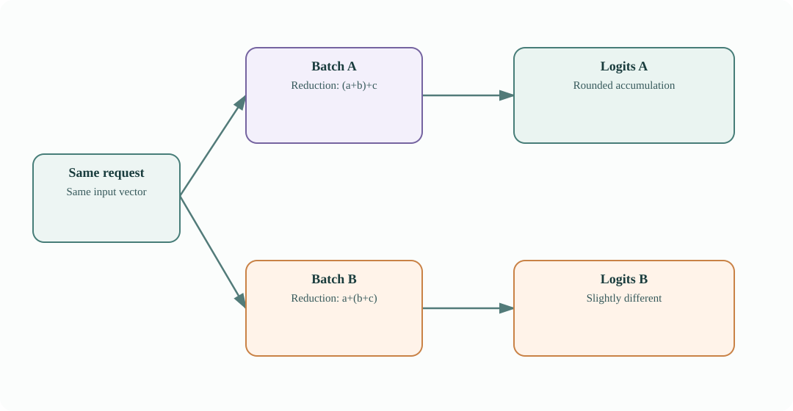
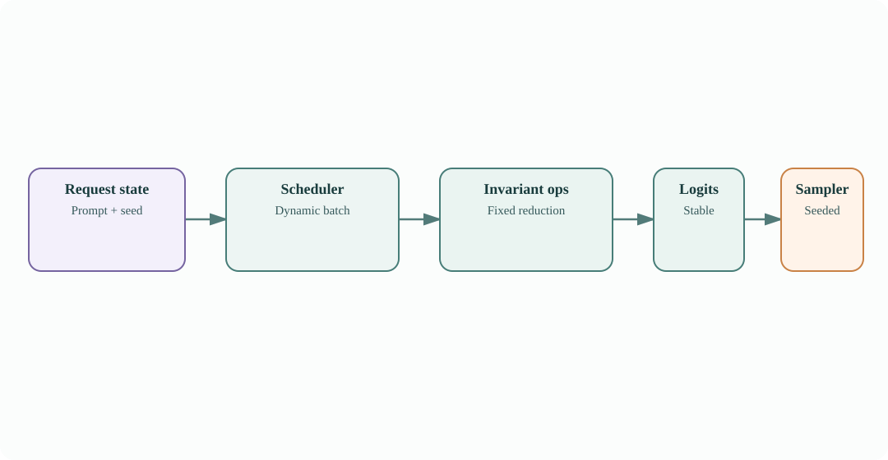

第 28 章 · SGLang 生产推理机制
Deterministic Inference：Batch-Invariant Kernels 与可复现性
解释动态 Batch、浮点非结合性、Batch-invariant operators、Attention Backend 兼容性与 RL rollout 的复现边界。
解释动态 Batch、浮点非结合性、Batch-invariant operators、Attention Backend 兼容性与 RL rollout 的复现边界。 本章区分研究论文的算法贡献、SGLang 当前源码实现、CPU-only 教学模型与硬件/部署限制。所有实现断言固定到 2026-11-23 的上游快照。
读完本章，你应该能
- 从请求入口追踪到对应的运行时状态、缓存或执行组件。
- 解释关键数据结构、数学关系、并发边界和失败模式。
- 使用可复现的 CPU-only toy 实验验证核心不变量，而不把教学代码误称为生产内核。
1. 1. temperature=0 仍然可能不确定
很多人把 temperature=0 当成“确定性开关”。它只意味着采样策略更接近 greedy；如果同一 prompt 在两次执行中得到略有差异的 logits，argmax 也可能在接近的候选 token 之间改变。差异可能来自 dynamic batching 改变 GPU kernel reduction order，而不是随机采样。对 RL rollout、回归测试和生产复现来说，问题不只是最终文本是否相同，还包括每个位置的 logits / logprobs 是否可重复。

2. 2. 浮点加法的非结合性
浮点数有有限精度。假设三个数分别为 a、b、c；数学实数下加法满足结合律，但浮点舍入使 (a+b)+c 与 a+(b+c) 可能不同。深度学习 kernel 会并行拆分 reduction，batch size、tile shape 和线程分配改变时，累加顺序也可能变化。误差可能很小，但在接近决策边界时足以改变下一个 token；改变的 token 又会改变后续 KV、上下文和所有后续输出。
3. 3. Dynamic batching 怎样影响同一个请求
同一个 request 在单独运行时可能走一个 kernel tile；与其他请求组成 batch 后，M/N/K 维度、padding、CTA 数量和 reduction tree 可能变化。即使输入 token 完全相同，执行路径也不一定逐 bit 相同。关闭 dynamic batching 可以减少一种来源，但通常牺牲并发吞吐；Batch-invariant kernel 则希望对 batch composition 保持相同的 per-request reduction 规则，避免把整个 serving 系统退化成单请求执行。
4. 4. Batch-invariant operators：把 reduction 规则固定下来
SGLang 的 deterministic inference 基于 batch-invariant operators。核心思路不是把 scheduler 变成静态 batch，而是让受支持的数值算子尽量不依赖运行时 batch shape 来决定累加顺序。这样 dynamic batching、chunked prefill 等系统优化可以继续存在，但算子实现需要选择确定性的 kernel path。注意它不是“所有 GPU kernel 自动确定”。模型层、设备平台、量化路径和 attention backend 都可能有单独限制；源码中也存在针对未支持设备/算子的显式 guard。

5. 5. Backend compatibility：确定性不是无条件开关
当前 SGLang 文档列出 FlashInfer、FlashAttention 3 (FA3) 与 Triton 三种 attention backend。兼容矩阵还要看 CUDA Graph、Chunked Prefill、Radix Cache 与非 greedy sampling：文档中 FlashInfer 对 Radix Cache 标记为不支持，而 FA3 / Triton 的组合更完整。因此启用 --enable-deterministic-inference 时，必须同时核对模型、GPU、attention backend、cache 与 sampling 配置。不能只看 flag 存在就推断当前组合一定受支持。
6. 6. Non-greedy sampling：随机性也必须有状态边界
temperature 大于 0 时，采样本身引入随机性。要复现多条 response，需要为每条请求定义可重复的 sampler seed/state，而不是依赖 batch 内全局 RNG 消耗顺序。否则某条请求前面多采了一个随机数，就可能改变同 batch 其他请求的采样序列。确定性测试要同时覆盖 logits determinism 与 sampler determinism：前者验证同一位置的分布是否一致，后者验证相同分布和相同 request seed 是否得到同一 token 序列。
7. 7. KV Cache、Prefix 与 Chunked Prefill 的验证边界
确定性推理还要验证同一请求在不同执行历史下是否一致，例如 cache hit vs cache miss、不同 prompt prefix 长度、chunked prefill 与不同 batch composition。SGLang 文档提供了 varying batch sizes、prefix tests 和 Radix Cache consistency tests 的验证方向。这并不意味着 cache 可随意跨模型、tokenizer 或 adapter namespace 共享。第 02、07、13 章的 cache namespace 前提仍然成立；确定性测试应把这些前提作为输入条件。
8. 8. 对 RL 的意义：降低噪声不等于自动 on-policy
在 RL rollout 中，训练端与推理端如果采用不同 kernel、batching 或 cache 行为，可能出现 logprob drift。确定性 inference 有助于降低采样系统内部由 batch shape 引起的非确定性，但它并不能单独证明训练与推理策略完全一致。若训练端要严格复现 rollout logits，还必须使用匹配的数值算子、权重版本、tokenizer、采样状态和位置编码约定。LLM-42 提出 decode–verify–rollback 的系统级路径；Vosti 则讨论跨 batch、chunk、KV reuse / eviction 的系统级确定性规范。它们与 SGLang 的 batch-invariant kernels 是相关但不同的设计，不应混写成同一种实现。
9. 9. 交互：选择复现测试
10. 10. 源码阅读路线与参考资料
9. 交互：选择机制配置
Mechanism selector
排查：固定 prompt 与 seed，改变同一请求的 batch composition，比较每个 decode position 的 logits，而不只比较最终文本。
排查：分别运行 cache hit、cache miss、不同 prefix 与 chunked prefill；确认 cache namespace 与模型配置相同。
排查：固定 per-request seed，验证非 greedy sampling；不能让一个 batch 级 RNG 消耗顺序决定其他请求的采样。
交互只改变教学状态，不会启动真实 SGLang server 或调用 GPU kernel。
10. 源码阅读路线与参考资料
- Deterministic Inference docs：根因、backend matrix、使用与验证。
- batch_invariant_ops.py：batch-invariant kernel implementation。
- model_runner.py：model runner 初始化 deterministic mode。
- LLM-42 · SOSP 2026；Vosti · 2026。
实现快照：sgl-project/sglang@563813c0d60282fa848382fec600b40d28ddec98。对 RL 的建议：把确定性、on-policy、training-inference parity 作为三个独立验收条件。